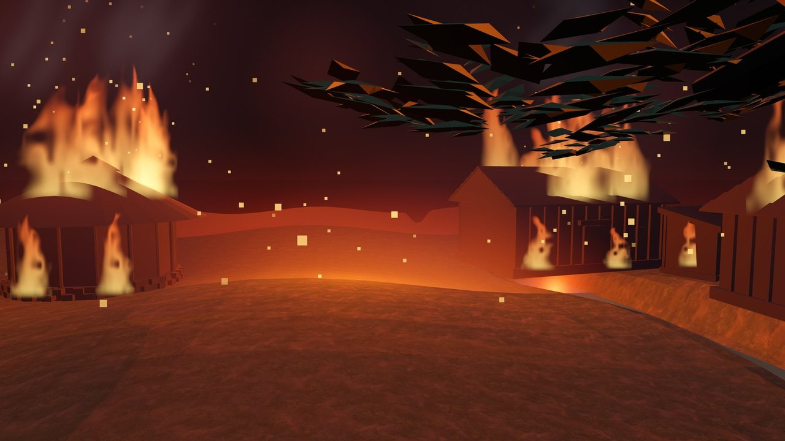
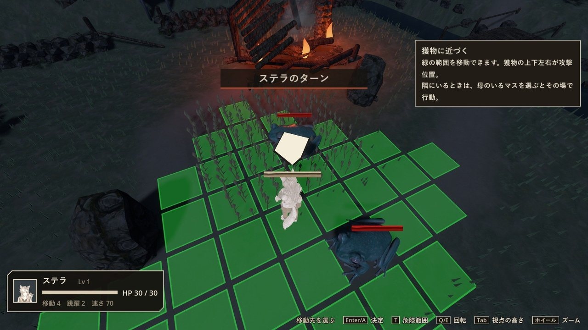
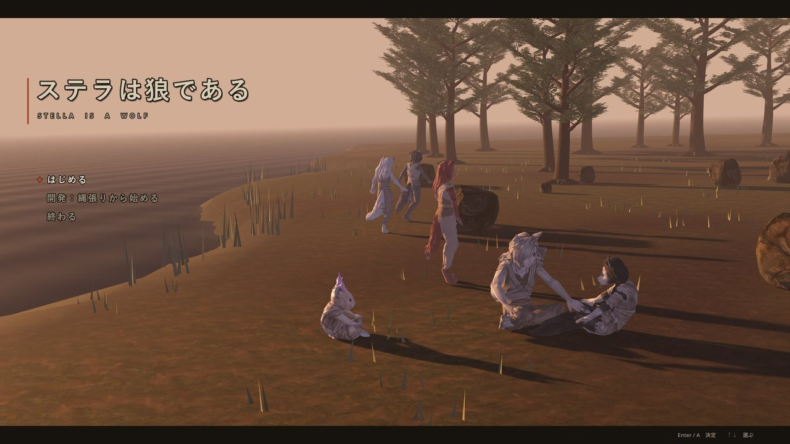

The village was burning.

Tactics / PC, in development
Stella is a wolf mother driven out of a human village. She keeps her pack alive by hunting, and every animal she eats leaves its mark on the next child she bears. She fights people. She never kills them.
- What she eats, her children becomeEat a bear and the pup grows a bear's coat. Eat a turtle and it is born with a shell.
- If the mother falls, the pack is finishedSend a child ahead, or stand in front yourself. You decide every turn.
- The story and the music are oursThe author writes the story text and composed the soundtrack. Some ground textures and models started as AI output; episode 6 of the devlog lists exactly which.




New devlog episodes go up on YouTube on Tuesdays, Fridays and Sundays.
Watch the devlog on YouTubeStella Is a Wolf
Haus Tacorari
In development